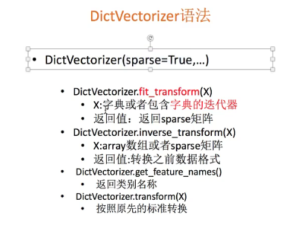

机器学习是从数据中自动分析获得规律（模型），并利用规律对未知数据进行预测
机器学习的数据：文件CSV
mysql的缺陷：1、性能瓶颈，读取速度
2、格式不太符合机器学习要求数据的格式
pandas：读取工具，基本的处理格式的工具
numpy：释放GIL锁，真正的多线程
可用数据集
数据结构：特征值+目标值
sklearn
UCI
kaggle
特征抽取
特征抽取（特征抽取对文本等数据进行特征值化）
from sklearn.feature_extraction.text import CountVectorizer
vector = CountVectorizer()
res = vector.fit_transform(["life is short,i love python","life is so long"])
print(vector.get_feature_names())
print(res.toarray())
字典特征抽取
作用：对字典数据进行特征抽取
类：sklearn.feature_extraction.DictVectorizer

流程：
1.实例化类DictVectorizer
2.调用fit_transform方法输入数据并转换 注意返回格式
字典要放到列表里
[ {'city':'北京'，'temperature':100}
{'city':'上海'，'temperature':60} ]
dict = DictVectorizer() //sparse = false 不返回数组，返回矩阵
data = dict.fit_transform([ {'city':'北京'，'temperature':100},{'city':'上海'，'temperature':60} ])
print(data) //返回sparse矩阵

字典数据抽取：把字典中一些类别数据，分别进行转换成特征
dict.get_feature_names()
['city=上海','city=北京','temperature']
文本特征抽取
作用：对文本数据进行特征值化
类：sklearn.feature_extraction.text.countVectorizer

from sklearn.feature_extraction.text import CountVectorizer
vector = CountVectorizer() //sparse = false
res = vector.fit_transform(["life is short,i love python","life is so long"])
print(res)
print(res.toarray()) //把sparse转换成narray
中文文本
下载：pip3 install jieba
使用：import jieba
jieba.cut("我是一个")
返回值：词语生成器，可以转换成列表,在转换成字符串（' '.join( )）
tf-df
TF-IDF的主要思想是：如果某个词或短语在一篇文章中出现的概率高，并且在其他文章中很少出现，
则认为此词或者短语具有很好的类别区分能力，适合用来分类。
TF-IDF作用：用以评估一字词对于一个文件集或一个语料库中的其中一份文件的重要程度
tf:term frequency(词的频率)
idf:inverse document frequency（逆文档频率） log(总文档数量/该词出现的文档数量)
tf*idf：重要性程度
sklearn.feature_extraction.text.TfidfVectorizer

tf.TfidfVectorizer()
data = tf.fit_transform([c1,c2,c3])
print(data.toarray()) // 返回三个array数组，每个数组中 每个单词对应一个值，值越大越重要